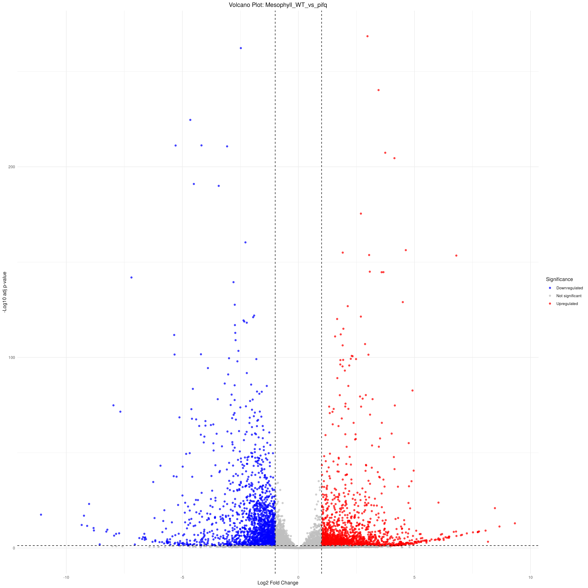
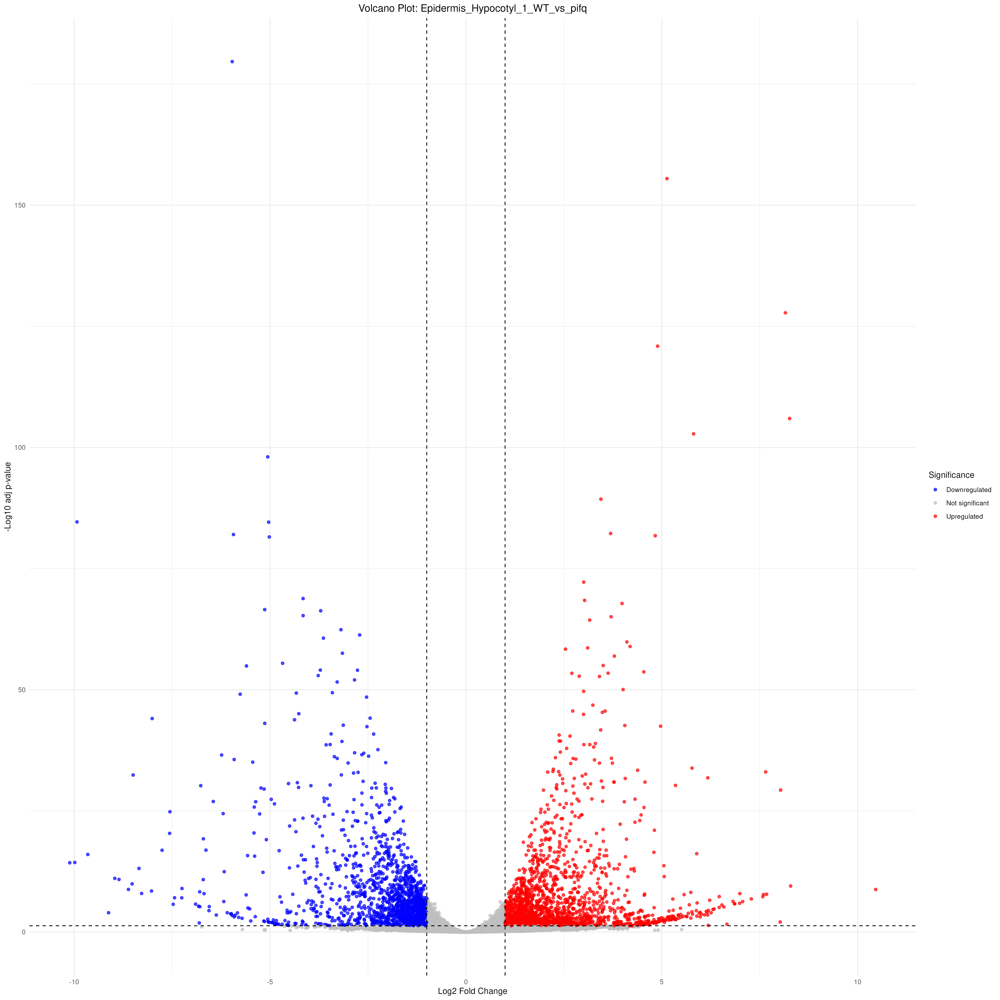
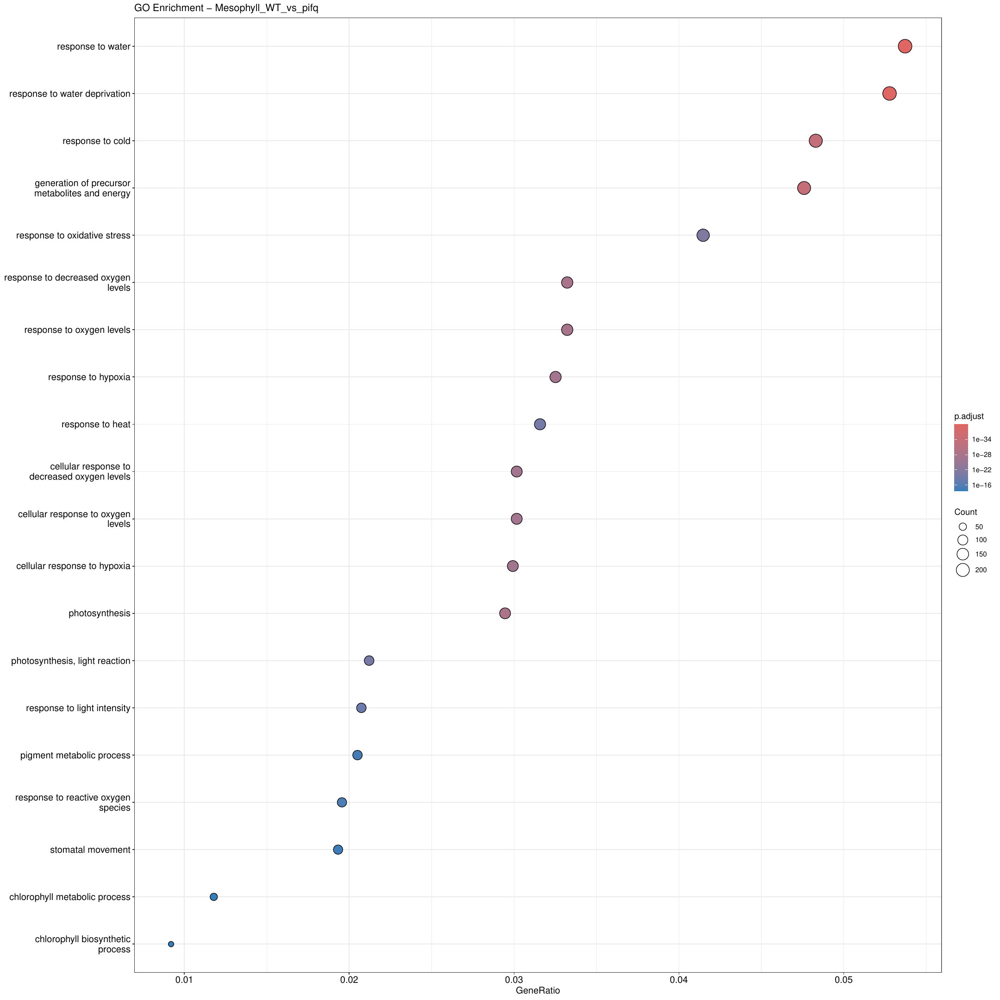
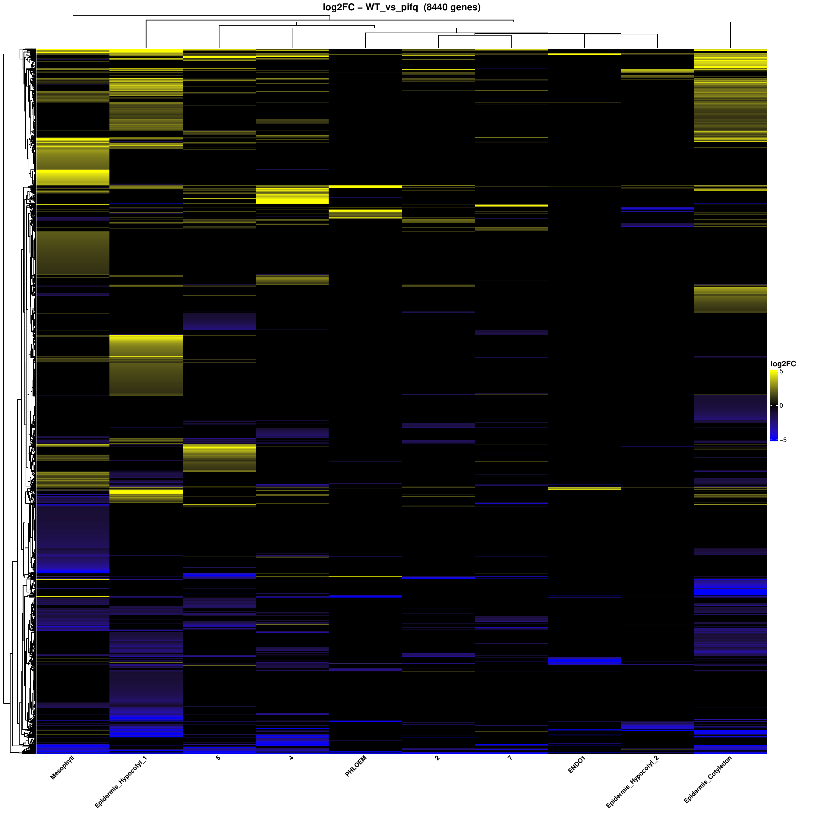
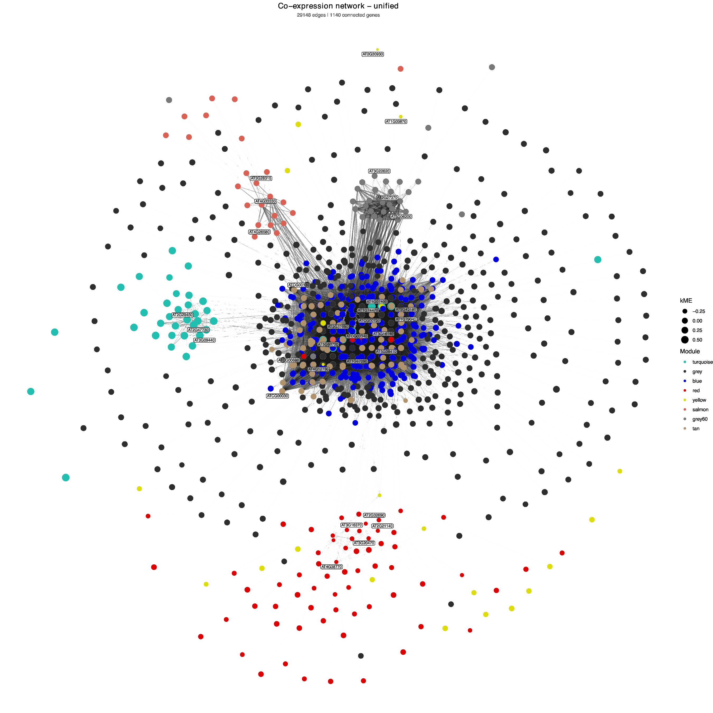

Chapter 2 - WT vs pifq: pseudobulk DE, GO enrichment, heatmaps and network sections
This Chapter 2 draft follows the structure of
workflow/capitulo2_pseudobulk_de.R. The WT/pifq adaptation
changes only the dataset-specific pieces: output folder
resultados_wt, input object
pbmc_harmony_annotated.rds, direct annotation column
celltype, and the WT_vs_pifq contrast.
No grouped or curated labels are used here. This keeps Chapter 2 aligned with the direct bibliography annotation from Chapter 1.
Configuration mirrors the original Chapter 2 script, with the WT/pifq result directory and the same function sources.
PIPELINE_DIR <- "/workspace/SingleCell/workflow"
DATA_DIR <- "/workspace/."
base_dir <- file.path(DATA_DIR, "resultados_wt")
source(file.path(PIPELINE_DIR, "load_libraries.R"))
source(file.path(PIPELINE_DIR, "custom_seurat.R"))
source(file.path(PIPELINE_DIR, "ScRNA_Analysis_Functions.R"))
list2env(create_pipeline_dirs(base_dir), envir = .GlobalEnv) # creates output folders and loads their paths as variables
set.seed(1807)
The input is the Chapter 1 bibliography-annotated object. The active
annotation column for Chapter 2 is celltype.
pbmc_harmony <- readRDS(file.path(dir_objects, "pbmc_harmony_annotated.rds"))
One Seurat subset is created per direct celltype label.
Object names are sanitized only for list names and filenames.
pseudobulk_annot_col <- "celltype"
cell_type_subsets <- create_cell_type_subsets(pbmc_harmony, annot_col = pseudobulk_annot_col)
celltype_counts <- summarize_pseudobulk_celltype_counts(
pbmc_harmony,
annot_col = pseudobulk_annot_col,
output_file = file.path(dir_objects, "pseudobulk_celltype_counts.tsv")
)
message("\n✓ SECTION 13 COMPLETE: Cell-type subsets created")Cell numbers are recorded before pseudo-replicate assignment so that low-abundance labels can be inspected before differential expression.
| Cell type | Cells |
|---|---|
| Epidermis Hypocotyl.1 | 1839 |
| 2 | 1594 |
| Epidermis Cotyledon | 1464 |
| 4 | 875 |
| 5 | 680 |
| Mesophyll | 489 |
| Epidermis Hypocotyl.2 | 366 |
| 7 | 366 |
| PHLOEM | 148 |
| ENDO1 | 78 |
| C2 | 57 |
| guard cell | 49 |
The same pseudo-replicate assignment structure is retained. The QC check
uses Mesophyll as an existing label in the WT/pifq dataset.
pseudobulk_conditions <- c("WT", "pifq")
n_pseudoreps <- 3
cell_type_subsets_replicates <- assign_pseudoreplicates_batch(
cell_type_subsets,
pseudobulk_conditions = pseudobulk_conditions,
n_pseudoreps = n_pseudoreps
)
table(cell_type_subsets_replicates$Mesophyll$condition)
table(cell_type_subsets_replicates$Mesophyll$replicate)
table(cell_type_subsets_replicates$Mesophyll$orig.ident)
pseudoreplicate_counts <- summarize_pseudoreplicate_counts(
cell_type_subsets_replicates,
output_file = file.path(dir_objects, "pseudobulk_pseudoreplicate_counts.tsv")
)
message("\n✓ SECTION 14 COMPLETE: Pseudo-replicates assigned")
After pseudo-replicate assignment, the cell numbers are summarized by
cell type and condition. The full replicate-level table is written to
resultados_wt/objects/pseudobulk_pseudoreplicate_counts.tsv.
| Cell type | Condition | Cells after pseudo-replicate assignment |
|---|---|---|
| 2 | WT | 147 |
| 2 | pifq | 1447 |
| 4 | WT | 403 |
| 4 | pifq | 472 |
| 5 | WT | 28 |
| 5 | pifq | 652 |
| 7 | WT | 100 |
| 7 | pifq | 266 |
| ENDO1 | WT | 53 |
| ENDO1 | pifq | 25 |
| Epidermis Cotyledon | WT | 464 |
| Epidermis Cotyledon | pifq | 1000 |
| Epidermis Hypocotyl 1 | WT | 805 |
| Epidermis Hypocotyl 1 | pifq | 1034 |
| Epidermis Hypocotyl 2 | WT | 334 |
| Epidermis Hypocotyl 2 | pifq | 32 |
| Mesophyll | WT | 134 |
| Mesophyll | pifq | 355 |
| PHLOEM | WT | 72 |
| PHLOEM | pifq | 76 |
| guard cell | WT | 5 |
| guard cell | pifq | 44 |
The contrast is WT_vs_pifq. Positive log2FC values correspond
to higher expression in pifq relative to WT.
comparisons <- list(
list(conds = c("WT", "pifq"), tag = "WT_vs_pifq")
)
cell_types_to_analyze <- NULL
output_dir <- dir_06
deseq2_results <- run_pseudobulk_deseq2_analysis(
cell_type_subsets_replicates = cell_type_subsets_replicates,
comparisons = comparisons,
output_dir = output_dir,
cell_types = cell_types_to_analyze,
pseudobulk_dir = file.path(dir_objects, "pseudobulk_replicas")
)
message("\n✓ SECTION 15 COMPLETE: Pseudobulk aggregation and DESeq2 complete")volcano_tag <- "WT_vs_pifq"
padj_cut <- 0.05
lfc_cut <- 1
render_volcano_plots(
results_dir = file.path(dir_06, volcano_tag),
output_dir = file.path(dir_06, volcano_tag, "volcano"),
pdf_name = paste0("VolcanoPlots_", volcano_tag, ".pdf"),
padj_cut = padj_cut,
lfc_cut = lfc_cut
)
message("\n✓ SECTION 16 COMPLETE: Volcano plots saved")

diff_prefix <- paste0("diff_table_", volcano_tag)
diff_tables <- build_differential_tables(
results_dir = file.path(dir_06, volcano_tag),
output_dir = file.path(dir_06, volcano_tag),
padj_cut = padj_cut,
lfc_cut = lfc_cut,
prefix = diff_prefix
)
message("\n✓ SECTION 17 COMPLETE: Differential gene tables saved")go_space <- "BP"
go_orgdb <- org.At.tair.db
go_keytype <- "TAIR"
padj_cutoff <- 0.05
go_results <- run_go_enrichment_for_contrast(
results_dir = file.path(dir_06, volcano_tag),
output_dir = file.path(dir_07, volcano_tag),
orgdb = go_orgdb,
keytype = go_keytype,
go_space = go_space,
padj_cutoff = padj_cutoff,
contrast_tag = volcano_tag
)
message("\n✓ SECTION 18 COMPLETE: GO enrichment complete")
heatmap_limits <- c(-5, 5)
build_logfc_heatmap(
logfc_table = diff_tables$logfc,
contrast_tag = volcano_tag,
output_dir = file.path(dir_06, volcano_tag),
limits = heatmap_limits
)
message("\n✓ SECTION 19 COMPLETE: Log2FC heatmap saved")
The hdWGCNA section is preserved from the original Chapter 2 structure. It uses the significant-gene table generated in Section 19.
wgcna_name <- "unified"
n_metacells <- 50
soft_power <- NULL
min_module_size <- 20
deep_split <- 2
run_unified_hdwgcna(
seurat_obj = pbmc_harmony,
de_table_path = file.path(dir_06, volcano_tag, "tabla_log2FC_fc1_padj_005.tsv"),
output_dir = dir_08,
annot_col = pseudobulk_annot_col,
sample_col = "orig.ident",
wgcna_name = wgcna_name,
n_metacells = n_metacells,
soft_power = soft_power,
min_module_size = min_module_size,
deep_split = deep_split
)
message("\n\u2713 SECTION 20 COMPLETE: hdWGCNA co-expression networks saved")tom_threshold <- 0.2
n_hub_label <- 5
plot_hdwgcna_network(
hdwgcna_dir = dir_08,
output_dir = dir_08,
tom_threshold = tom_threshold,
n_hub_label = n_hub_label
)
message("\n✓ SECTION 21 COMPLETE: Network files and plots saved")
tom_threshold_tf <- 0.2
n_hub_label_tf <- 15
edges_all <- read.table(file.path(dir_08, "edges_unified.tsv"),
header=TRUE, sep="\t")
tfs <- trimws(readLines(file.path(DATA_DIR, "SingleCell", "data", "AtTFDB_loci.txt")))
de_mat <- read.table(
file.path(dir_06, volcano_tag, "tabla_log2FC_fc1_padj_005.tsv"),
header=TRUE, sep="\t", row.names=1, check.names=FALSE)
edges_tf <- edges_all[edges_all$weight >= tom_threshold_tf, ]
net_tf <- build_tf_network(edges_tf, tfs, de_mat)
plot_tf_de_network(net_tf,
output_dir = dir_08,
layout = "graphopt",
n_hub_label = n_hub_label_tf,
contrast_tag = volcano_tag,
output_pdf = "network_tf_DE_direction.pdf",
output_width = 22,
output_height = 22)
message("\n✓ SECTION 21b COMPLETE: TF network saved to network_tf_DE_direction.pdf")